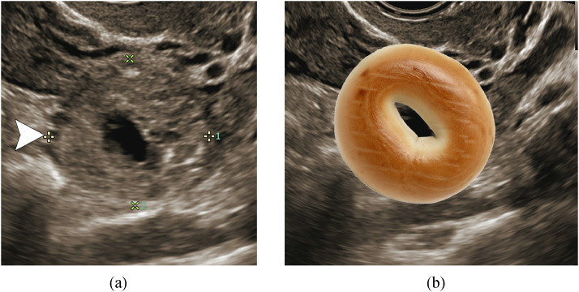

550 — Thai sớm: SRU, ngoài tử cung & vòng lửa / Early pregnancy
Tags: pattern:thai-som vung:tu-cung-phan-phu score:SRU protocol:TVUS-thai-som
Mức chắc chắn (certainty): tổng hợp y văn (literature synthesis) — nhóm tự biên từ y văn mở, chưa gắn ca nguyên văn đơn lẻ.
1. Tổng quan — ngưỡng SRU là đặc hiệu 100%, dưới ngưỡng là chờ
- SRU 2013: CRL ≥ 7 mm không tim hoặc MSD ≥ 25 mm không phôi = thai lưu chắc chắn — TẠI SAO: qua ngưỡng này phôi sống không thể chưa có tim (độ phân giải TVUS hiện đại); dưới ngưỡng (CRL 5–6,9 mm / MSD 16–24 mm) chỉ "nghi ngờ" + hẹn 7–10 ngày (tránh hút nhầm thai sống!).
- Thai ngoài: β-hCG ≥ 3.500 (vùng phân biệt) + tử cung trống + khối tách buồng trứng (blob/bagel, PPV > 95–96%) + máu ổ bụng — TẠI SAO blob tiến thành bagel: túi thai lớn dần tạo lỗ trung tâm.
- Vòng lửa (ring of fire) gặp cả hoàng thể lẫn thai ngoài — TẠI SAO: cả 2 đều tăng sinh mạch; vị trí TRONG vs NGOÀI buồng trứng mới là chốt.
2. Gamut ra máu/đau 3 tháng đầu (Gamut)
- CRL ≥ 7 mm không tim / MSD ≥ 25 mm không phôi: thai lưu — hút/nội khoa (không cần chờ).
- Dưới ngưỡng + còn sống được: hẹn 7–10 ngày (14 ngày sau túi chưa yolk / 11 ngày sau yolk).
- Tử cung trống + hCG cao + blob/bagel tách buồng trứng: thai ngoài — methotrexate/mổ.
- Vòng lửa TRONG buồng trứng: hoàng thể (theo dõi); NGOÀI + máu = thai ngoài.
3. Bảng so sánh phân biệt (ma trận đối chiếu)
| Thực thể (entity) | Hình ảnh điển hình | Chốt vào (rule-in) | Chốt loại (rule-out) | Gợi ý xác nhận |
|---|---|---|---|---|
| Thai lưu chắc chắn | CRL ≥ 7 mm không tim / MSD ≥ 25 mm không phôi | Vượt ngưỡng SRU = 100% | Dưới ngưỡng → hẹn lại | Hút/nội khoa, không chờ |
| Thai ngoài | Blob/bagel tách buồng trứng + máu + hCG cao | Blob→bagel + tách buồng trứng (PPV > 95%) | Vòng lửa trong trứng → hoàng thể | MTX/mổ + hCG theo dõi |
| Hoàng thể | Vòng lửa TRONG buồng trứng + thai trong tử cung | Trong trứng + thai tử cung sống | Ngoài trứng + máu → thai ngoài | Theo dõi (tự teo) |
| Thai kẽ/vết mổ | Lệch sừng + cơ bao < 5 mm + interstitial line | Cơ mỏng + line (+) + vết mổ cũ | Giữa tử cung + cơ dày → trong tử cung | MTX/mổ (vỡ = tử vong!) |

Từ blob đặc 3 ngày trước tiến thành bagel; mổ xác nhận thai vòi. Nguồn: Lima et al., Radiol Case Rep 2021 Fig. 2, CC BY-NC-ND 4.0 (giữ nguyên bản).4. Protocol TVUS thai sớm
- TVUS + β-hCG + hẹn lại đúng ngày (7–10 / 11 / 14 ngày theo mốc); blob/bagel + máu = báo động đỏ + định lượng hCG.
flowchart TD
A[Ra máu/đau + hCG +] --> B{Túi trong tử cung?}
B -->|Có + tim| C[Thai sống: theo dõi]
B -->|Có + CRL≥7/MSD≥25| D[Thai lưu: xử trí]
B -->|Trống + blob/bagel| E[Thai ngoài: MTX/mổ]
B -->|Chưa rõ| F[Hẹn 7-10 ngày, cấm hút vội]
5. Cạm bẫy
- Hút thai dưới ngưỡng SRU = giết thai sống — hẹn lại là luật sống còn.
- Vòng lửa = thai ngoài mù quáng — hoàng thể cũng vòng lửa (vị trí mới chốt!).
- Thai vết mổ/vòi kẽ vỡ tử vong — cơ < 5 mm + line (+) là MTX/mổ sớm, đừng chờ.
- Vùng phân biệt β-hCG (1.500–3.000 TVUS, bảo tồn 3.500) — dưới ngưỡng + tử cung trống là "thai chưa rõ vị trí", hẹn hCG 48h (tăng < 53% = bất thường!), đừng kết luận vội.
6. Tự lượng giá — Blind Quiz
Ca 1 — Thai 6 tuần đau + ra máu, hCG 225→1657 sau 3 ngày. Đọc siêu âm.
- Hỏi: blob hay bagel? Thai ngoài hay hoàng thể? Xử trí?
Bấm để hiện đáp án
- Dấu hiệu (findings): nhẫn dày âm vang + dịch giữa tách buồng trứng = bagel sign (từ blob 3 ngày trước).
- Chẩn đoán (diagnosis): thai ngoài tử cung vòi (PPV > 95%) — mổ/MTX + hCG theo dõi (hoàng thể nằm TRONG trứng).
- Nguồn: Lima et al., Fig. 2, CC BY-NC-ND 4.0 (nguyên bản).
Ca 2 — CRL 6 mm không tim, thai phụ khóc xin hút: hút luôn hay hẹn? (Bảng mục 3.)
Bấm để hiện đáp án
- Hẹn 7–10 ngày: dưới ngưỡng 7 mm chỉ "nghi ngờ" (hút vội có thể giết thai sống!).
Bài liên quan chéo
- 500 – Tổng quan Vú & SPK
- 530 – Phần phụ (blob vs hoàng thể)
- 160 – Bụng cấp GI (đau hố chậu nữ)
Không dùng để chẩn đoán độc lập khi chưa có người hướng dẫn.